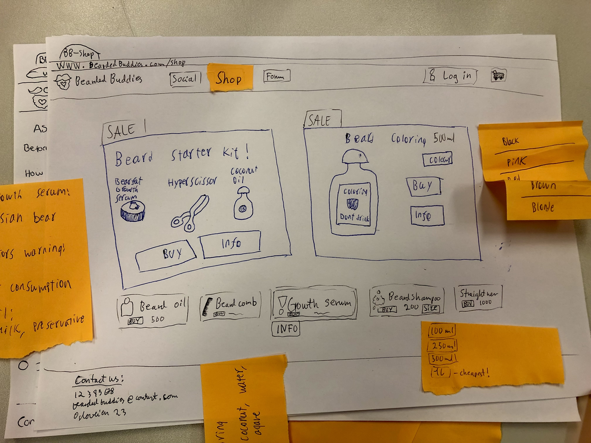
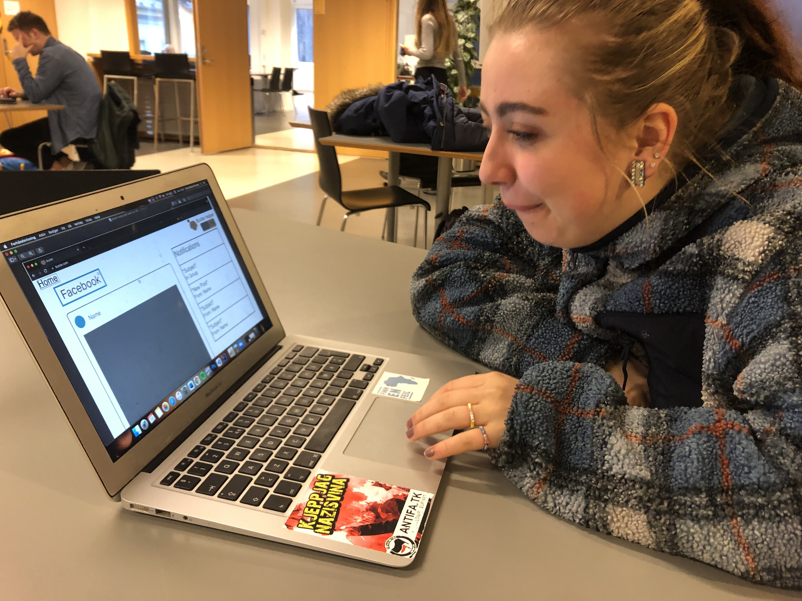
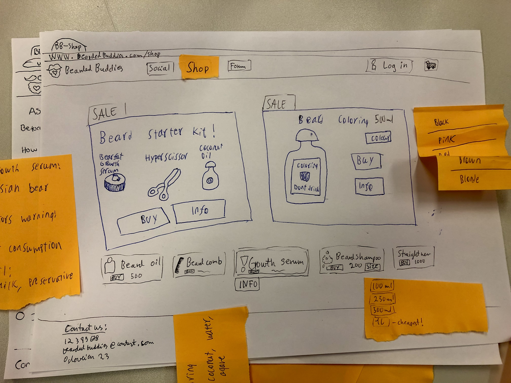
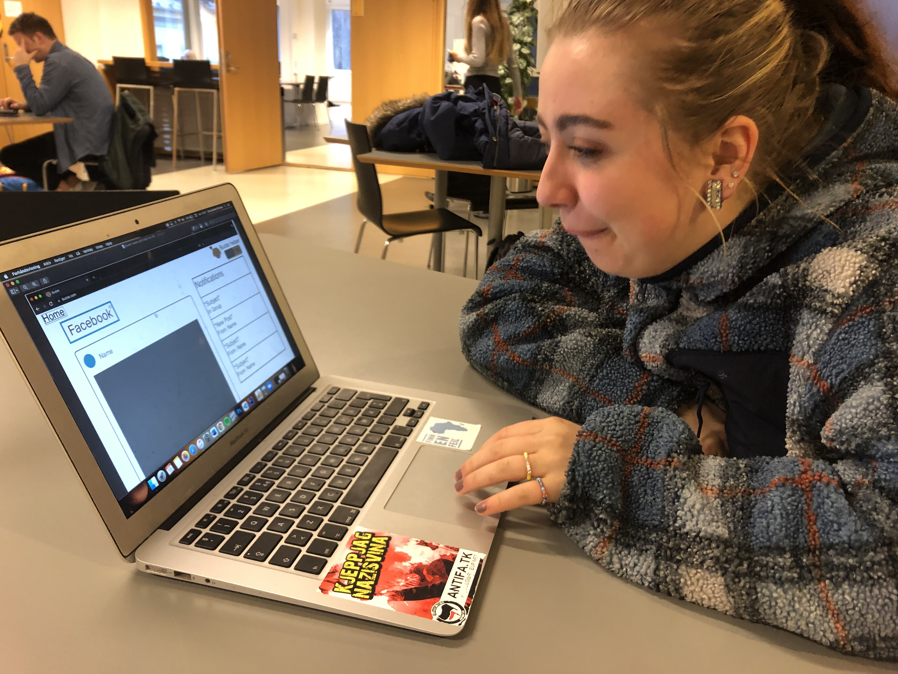

This semester I have started studying for the first time, and this has changed my life drastically, in many different ways.
 



When transitioning from upper-secondary school to university, the biggest challenge I experienced was having to do most of my schoolwork on my own. Being a student rather than a pupil means. But what I learned was more fun and more engaging than in school, and when I started to understand the basics the rest made more sense. Also, having my friends review my work helped me both see how to do things better and how far I had actually come.